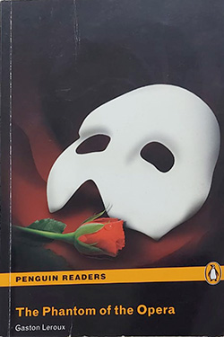

The Phantom Of the Opera - Gaston Leroux
Sobre o livro:
With an Introduction by David Stuart Davies ... the shadow turned round; and I saw a terrible death s-head, which darted a look at me from a pair of scorching eyes. I felt as if I were face to face with Satan... Erik, the Phantom of the Paris Opera House, is one of the great icons of horror literature. This tormented and disfigured creature has made his home in the labyrinthine cellars of this opulent building where he can indulge in his great passion for music, which is a substitute for the love and emotion denied him because of his ghastly appearance. It is in the Opera House that he encounters Christine Daaé whom he trains in secret to become a great singer. Erik s passionate obsession with a beautiful woman beyond his reach is doomed and leads to the dramatic tragic finale. Gaston Leroux s novel is a marvellous blend of detective story, romance and spine-tingling terror which has fascinated readers ever since the work was first published.
Imagens:
Onde Encontrar?
Estante 02, Prateleira 02, Seção L
Código do Livro
3211
Outras informações:
- Número de páginas: 91;
- Autor: Gaston Leroux(1868-1927);
- Idioma:: Inglês
- Editora: Penguin Classics